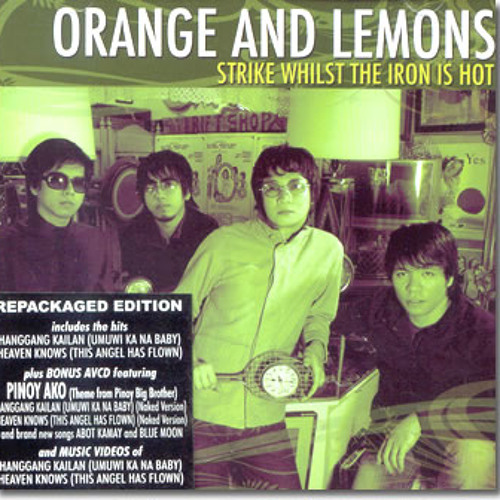

Orange and Lemons
There are times when I'm lying in my bed How I bellow and cry from this stupid gateAnd my eyes are like windshields on a rainy day Almost rubbed-down, swelling As I keep on dipping my face in these cold hands of mine Heaven knows how embittered I am
'Cause this angel has flown away from me Leaving me with drunken misery I should have clipped her wings And made her mine for all eternityNow, this angel has flown away from me thought I had the strength to set her free did what I did because I love her so will she ever find her way back home to me? Oh-oh
I'm so tired, I feel like catching 40 winks being up all night in this elbow room that puts me in a trance where hopes and dreams come trueNow, my lips are burning and my eyes are hurting from these fumes I make, still, I light another cigarette just to pass my time, oh heaven knows how embittered I am
'Cause this angel has flown away from me leaving me with drunken misery I should have clipped her wings and made her mine for all eternityNow, this angel has flown away from me thought I had the strength to set her free did what I did because I love her so will she ever find her way back home to me? Oh-oh
